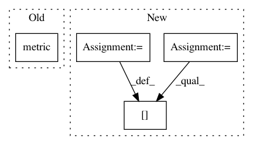

a366fb0d2fb91f7297949c718c749a4587ad78a6,monitoring/api/v3/cloud-client/quickstart.py,,run_quickstart,#,16
Before Change
}
)
metric = client.metric(
type_="custom.googleapis.com/my_metric",
labels={}
)
// Default arguments use endtime datetime.utcnow()
client.write_point(metric, resource, 3.14)
print("Successfully wrote time series.")
After Change
series = monitoring_v3.types.TimeSeries()
series.metric.type = "custom.googleapis.com/my_metric"
series.resource.type = "gce_instance"
series.resource.labels["instance_id"] = "1234567890123456789"
series.resource.labels["zone"] = "us-central1-f"
point = series.points.add()
point.value.double_value = 3.14
now = time.time()
In pattern: SUPERPATTERN
Frequency: 3
Non-data size: 4
Instances
Project Name: GoogleCloudPlatform/python-docs-samples
Commit Name: a366fb0d2fb91f7297949c718c749a4587ad78a6
Time: 2018-05-18
Author: rennie@google.com
File Name: monitoring/api/v3/cloud-client/quickstart.py
Class Name:
Method Name: run_quickstart
Project Name: biolab/orange3
Commit Name: 64285043a7dad50b9fc21a3c755ae42c3cfa411e
Time: 2019-12-06
Author: tankovesna@hotmail.com
File Name: Orange/widgets/unsupervised/owdistances.py
Class Name: DistanceRunner
Method Name: run
Project Name: ncullen93/torchsample
Commit Name: ef2be6e6d06e153141acdbd44e54405fe1dc2c4a
Time: 2017-07-13
Author: ncullen.th@dartmouth.edu
File Name: torchsample/metrics.py
Class Name: MetricsModule
Method Name: __call__